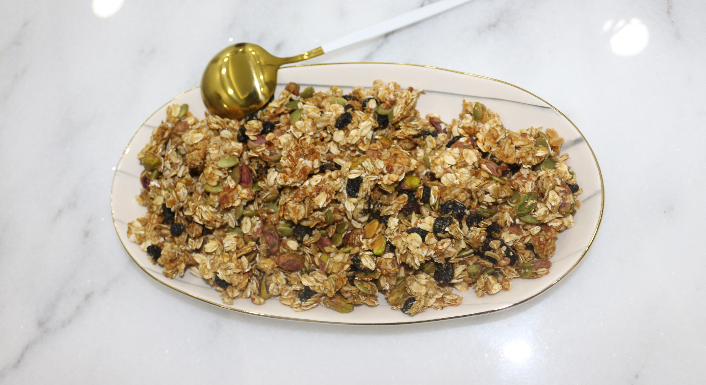
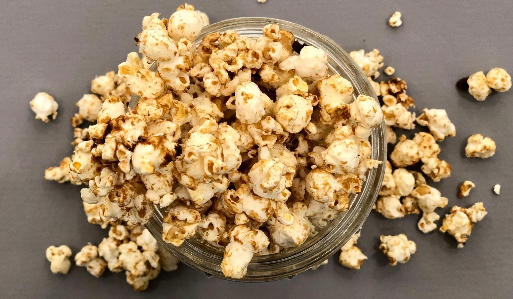
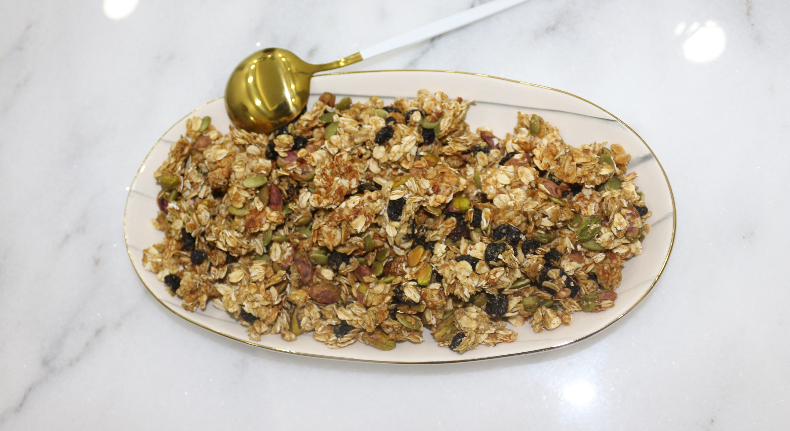
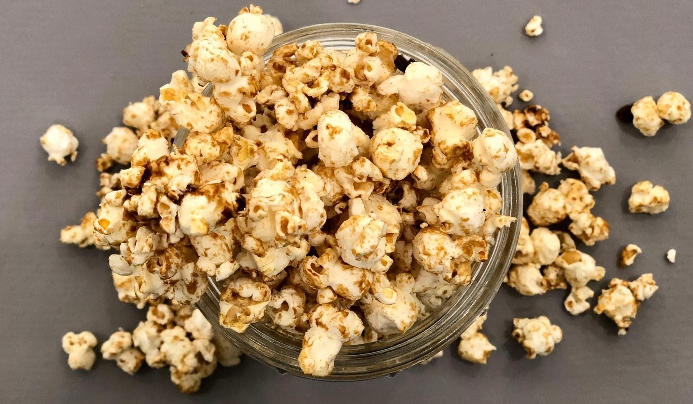

About
I am Fatema Alaali, and I have a passion for healthy food. Four years ago I started a health journey, I stopped consuming white sugar and unhealthy carbohydrates, this changed my life in so many ways. For instance, I noticed that I became more energetic
and that I didn't get bloated as often as before.
This website is part of my project for the web development module. It is a website where I share some of the healthy recipes that I have enjoyed over the last
few years.